Historia
Antes de UML 1.x
Después de que la Rational Software Corporation contratara a James Rumbaugh de General Electric, en 1994, la compañía se convirtió en la fuente de los dos esquemas de modelado orientado a objetos más populares de la época: Object-Modeling Technique (OMT) de Rumbaugh, que era mejor para análisis orientado a objetos, y el Método Booch (de Grady Booch) que era mejor para el diseño orientado a objetos. Poco después se les unió Ivar Jacobson, el creador del método de ingeniería de software orientado a objetos. Jacobson se unió a Rational, en 1995, después de que su compañía Objectory AB fuera comprada por Rational. Los tres metodologistas eran conocidos como los Tres Amigos, porque se sabía de sus constantes discusiones sobre las prácticas metodológicas.
En 1996 Rational concluyó que la abundancia de lenguajes de modelado estaba alentando la adopción de la tecnología de objetos, y para orientarse hacia un método unificado, encargaron a los Tres Amigos que desarrollaran un "lenguaje unificado de modelado" abierto. Se consultó con representantes de compañías competidoras en el área de la tecnología de objetos durante la OOPSLA '96; eligieron "cajas" para representar clases en lugar de la notación de Booch que utilizaba símbolos de "nubes".
Bajo la dirección técnica de los Tres Amigos (Rumbaugh, Jacobson y Booch) fue organizado un consorcio internacional llamado UML Partners en 1996 para completar las especificaciones del UML, y para proponerlo como una respuesta al OMG RFP. El borrador de la especificación UML 1.0 de UML Partners fue propuesto a la OMG en enero de 1997. Durante el mismo mes, la UML Partners formó una Fuerza de Tarea Semántica, encabezada por Cris Kobryn y administrada por Ed Eykholt, para finalizar las semánticas de la especificación y para integrarla con otros esfuerzos de estandarización. El resultado de este trabajo, el UML 1.1, fue presentado ante la OMG en agosto de 1997 y adoptado por la OMG en noviembre de 1997.
UML 1.x
Como notación de modelado, la influencia de la OMT domina UML (por ejemplo, el uso de rectángulos para clases y objetos). Aunque se quitó la notación de "nubes" de Booch, sí se adoptó la capacidad de Booch para especificar detalles de diseño en los niveles inferiores. La notación de "Casos de Uso" del Objectory y la notación de componentes de Booch fueron integrados al resto de la notación, pero la integración semántica era relativamente débil en UML 1.1, y no se arregló realmente hasta la revisión mayor de UML 2.0.
Conceptos de muchos otros métodos orientados a objetos (MOO) fueron integrados superficialmente en UML con el propósito de hacerlo compatible con todos los MOO. Además, el grupo tomó en cuenta muchos otros métodos de la época, con el objetivo de asegurar amplia cobertura en el dominio de los sistemas en tiempo real. Como resultado, UML es útil en una gran variedad de problemas de ingeniería, desde procesos sencillos y aplicaciones de solamente un usuario a sistemas concurrentes y distribuidos.
UML 2.x
UML ha madurado considerablemente desde UML 1.1, varias revisiones menores (UML 1.3, 1.4 y 1.5) han corregido defectos y errores de la primera versión de UML. A estas le ha seguido la revisión mayor UML 2.0 que fue adoptada por el OMG en 2005.
Aunque UML 2.1 nunca fue lanzado como una especificación formal, las versiones 2.1.1 y 2.1.2, aparecieron en 2007, seguidas por UML 2.2 en febrero de 2009. UML 2.3 fue lanzado oficialmente en mayo de 2010. UML 2.4.1 fue lanzado oficialmente en agosto de 2011. UML 2.5.1 fue lanzado en octubre de 2012 como una versión "En proceso" que fue formalmente liberada en junio de 2015.

Tipos de diagramas
Existen dos clases principales de tipos de diagramas: diagramas estructurales y diagramas de comportamiento. Estos últimos incluyen varios que representan diferentes aspectos de las interacciones. Estos diagramas pueden ser categorizados jerárquicamente como se muestra en el siguiente diagrama de clases:
Diagrama de clases
Los diagramas de clase son, sin duda, el tipo de diagrama UML más utilizado. Es el bloque de construcción principal de cualquier solución orientada a objetos. Muestra las clases en un sistema, atributos y operaciones de cada clase y la relación entre cada clase. En la mayoría de las herramientas de modelado, una clase tiene tres partes, nombre en la parte superior, atributos en el centro y operaciones o métodos en la parte inferior. En sistemas grandes con muchas clases relacionadas, las clases se agrupan para crear diagramas de clases. Las Diferentes relaciones entre las clases se muestran por diferentes tipos de flechas.

Diagrama de componentes
Un diagrama de componentes muestra la relación estructural de los componentes de un sistema de software. Estos se utilizan principalmente cuando se trabaja con sistemas complejos que tienen muchos componentes. Los componentes se comunican entre sí mediante interfaces. Las interfaces se enlazan mediante conectores.
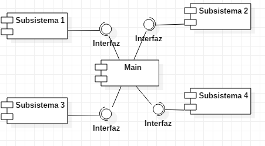
Diagrama de despliegue
Un diagrama de despliegue muestra el hardware de su sistema y el software de ese hardware. Los diagramas de implementación son útiles cuando la solución de software se despliega en varios equipos, cada uno con una configuración única.
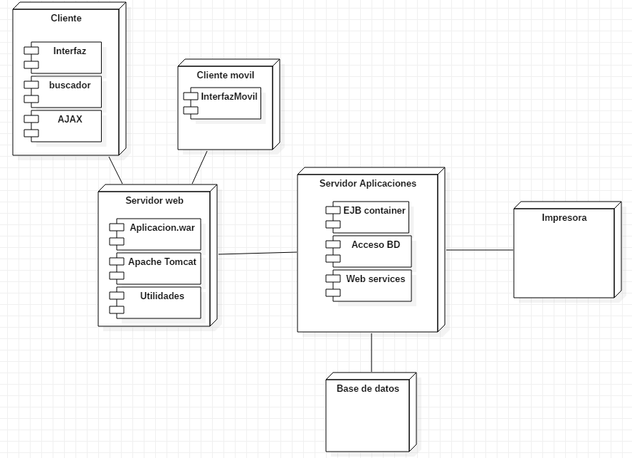
Diagrama de objetos
Los diagramas de objetos, a veces denominados diagramas de instancia, son muy similares a los diagramas de clases. Al igual que los diagramas de clases, también muestran la relación entre los objetos, pero usan ejemplos del mundo real. Se utilizan para mostrar cómo se verá un sistema en un momento dado. Debido a que hay datos disponibles en los objetos, a menudo se utilizan para explicar relaciones complejas entre objetos.
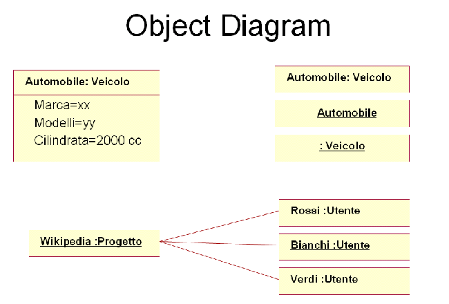
Diagrama de paquetes
Como su nombre indica, un diagrama de paquetes muestra las dependencias entre diferentes paquetes de un sistema.
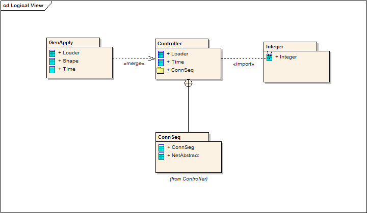
Diagrama de estructura compuesta
Los diagramas de estructura compuesta se utilizan para mostrar la estructura interna de una clase.
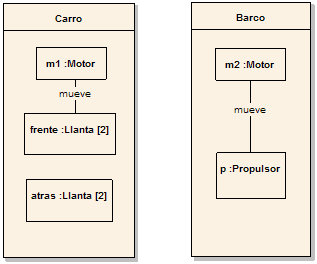
Diagrama de actividades
Los diagramas de actividad representan los flujos de trabajo de forma gráfica. Pueden utilizarse para describir el flujo de trabajo empresarial o el flujo de trabajo operativo de cualquier componente de un sistema. A veces, los diagramas de actividad se utilizan como una alternativa a los diagramas de máquina del estado.
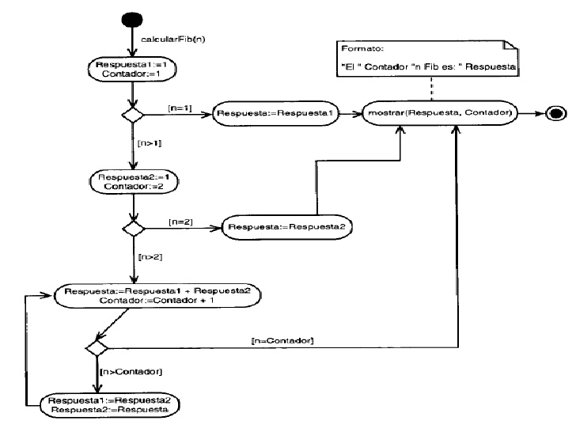
Diagrama de casos de uso
Como el tipo de diagrama de diagramas UML más conocido, los diagramas de casos de uso ofrecen una visión general de los actores involucrados en un sistema, las diferentes funciones que necesitan esos actores y cómo interactúan estas diferentes funciones. Es un gran punto de partida para cualquier discusión del proyecto, ya que se pueden identificar fácilmente los principales actores involucrados y los principales procesos del sistema.
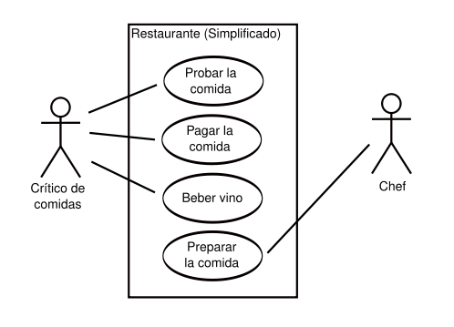
Diagrama de secuencia
Los diagramas de secuencia en UML muestran cómo los objetos interactúan entre sí y el orden en que se producen esas interacciones. Es importante tener en cuenta que muestran las interacciones para un escenario en particular. Los procesos se representan verticalmente y las interacciones se muestran como flechas. Los diagramas de secuencia de UML forman parte de un modelo UML y solo existen dentro de los proyectos de modelado UML.
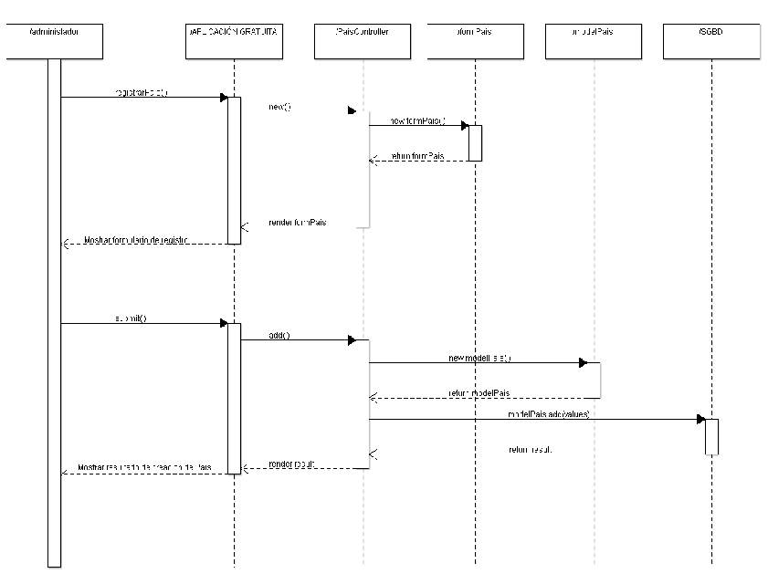
Diagrama de comunicación
El diagrama de comunicación se llamó diagrama de colaboración en UML 1. Es similar a los diagramas de secuencia, pero el foco está en los mensajes pasados entre objetos.
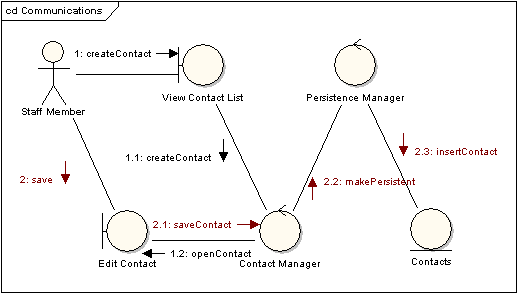
Diagrama de tiempos
Los diagramas de sincronización son muy similares a los diagramas de secuencia. Representan el comportamiento de los objetos en un marco de tiempo dado. Si es solo un objeto, el diagrama es directo, pero si hay más de un objeto involucrado, también se pueden usar para mostrar interacciones de objetos durante ese período de tiempo.
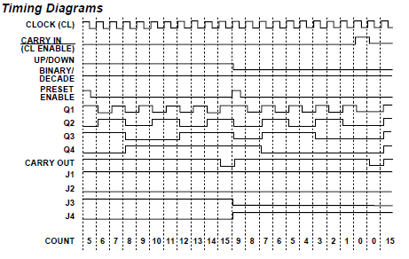
Diagrama global de interacciones
Los diagramas generales o globales de interacción son muy similares a los diagramas de actividad. Mientras que los diagramas de actividad muestran una secuencia de procesos, los diagramas de interacción muestran una secuencia de diagramas de interacción. En términos simples, pueden llamarse una colección de diagramas de interacción y el orden en que suceden. Como se mencionó anteriormente, hay siete tipos de diagramas de interacción, por lo que cualquiera de ellos puede ser un nodo en un diagrama de vista general de interacción.
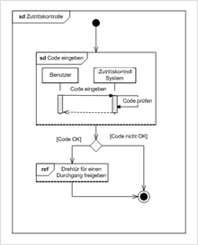